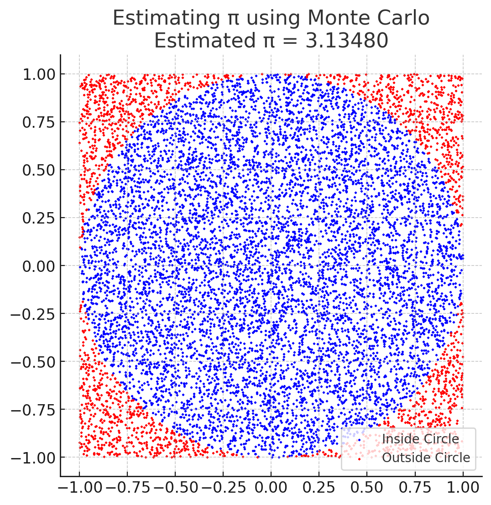
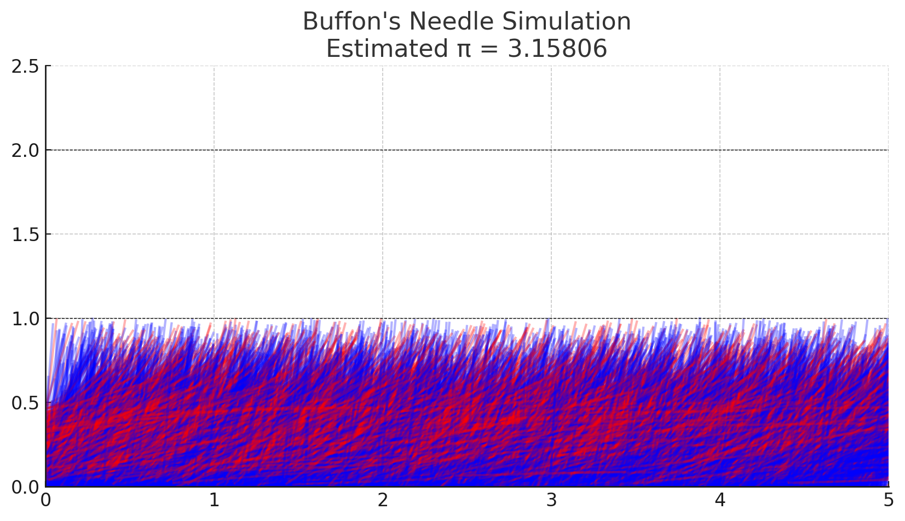

Problem 2
Estimating π using Monte Carlo Methods
Part 1: Estimating π Using a Circle (Geometric Probability)
Theoretical Foundation
This method estimates π by comparing areas. We use a unit circle (radius = 1) inside a square with side 2x2.
- Circle Area = π
- Square Area = 4
The probability that a random point falls inside the circle is:
P = Area of Circle / Area of Square = π / 4
Thus,
π ≈ 4 × (Points Inside Circle / Total Points)
Simulation Steps
- Generate random (x, y) points in [-1, 1] × [-1, 1]
- Count points where
x² + y² <= 1 - Estimate π using the ratio:
π ≈ 4 × (# inside circle / total points)
Visualization
- Blue points are inside the circle
- Red points are outside
This forms a visual approximation of the circle.
Convergence
- Error decreases as more points are sampled
- Convergence rate is proportional to
1/√N(N = number of points)
Part 2: Estimating π Using Buffon’s Needle (Probabilistic Geometry)
Theoretical Foundation
Drop a needle of length L on a surface with lines spaced distance D apart. The probability that the needle crosses a line is:
P = (2L) / (πD)
Rearranging:
π ≈ (2L × # Throws) / (D × # Crossings)
Simulation Steps
- Drop needles at random angles θ ∈ [0, π] and random vertical positions
- Compute vertical projection:
y_tip = (L / 2) × sin(θ) - A crossing occurs if this projection is greater than the distance to the nearest line
- Use the above formula to estimate π

Visualization
- Blue needles cross a line
- Red needles do not
- Dotted black lines show the parallel lines
Convergence
- Slower than the circle method
- More variance due to trigonometric calculations
Comparison of Methods
| Feature | Circle-Based Monte Carlo | Buffon’s Needle |
|---|---|---|
| Core Concept | Area ratio inside square | Needle-line crossing probability |
| Formula | π ≈ 4 × (inside/total) |
π ≈ (2L × N) / (D × C) |
| Visual | Dots in a circle/square | Needles and parallel lines |
| Convergence Rate | Faster | Slower |
| Complexity | Simple | Medium (involves sin, angle) |